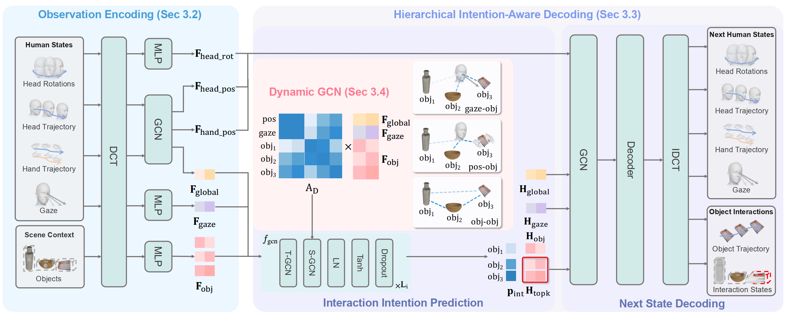

Proactive VR/AR systems require predicting situated user behavior, including gaze, motion, and object interaction, from historical human dynamics and scene context. This is challenging because future behavior depends on both human intention and environmental structure. We present a hierarchical intention-aware framework for situated behavior prediction. The model first infers interaction intentions via a gaze-guided dynamic interaction graph and then predicts fine-grained future gaze, trajectory, and object interaction. Evaluation on two public benchmarks and a real-world VR experiment show that our framework produces accurate predictions under realistic conditions and supports proactive VR applications that anticipate user behavior and adapt interactions accordingly.

Real world experiments results. We present three different perspectives: an exocentric view, an egocentric view from the VR device, and the corresponding rendering result in Blender. In Blender, we use a yellow Lego figure to represent the ground truth and a blue Lego figure for our prediction results. Simultaneously, the color of an object's bounding box represents the probability value output by our model. A color closer to green indicates a higher probability that the model believes the object will be interacted with next. Conversely, a color closer to white indicates a lower probability of interaction.
Qualitative results of our model on the ADT dataset. The visualization includes: (top-left) an egocentric RGB view for reference, (top-right) 3D visualization of interaction scenario, (bottom) wireframe representation of the environment with ground-truth and our predictions on human states and the interacted object states. Visual elements include human gaze direction (rays), human head position and orientation (pyramids), human hand positions (points), and the interacted objects (bounding boxes). Red elements represent the input and ground-truth, and green bounding boxes represent the ground truth object interaction trajectory, while blue elements and blue bounding boxes represent the corresponding predictions. White bounding boxes indicate the top K objects selected by our interaction intention prediction module.
In the input clip, the subject's gaze sweeps over the coffee cup on the round stool while bending down and reaching for it. Our model can recognize and understand the subject's intention, identify the coffee cup as the next active object, and predict object motion trajectories similar to the ground truth.
In this example, there is a wide array of objects available on the table in front of the subject. In the input clip, the subject is holding a wooden spoon in his right hand, and his left hand is approaching a bowl on the table, with accompanying eye gaze. Our model can accurately predict from the numerous objects that the wooden spoon in the right hand will remain in interaction, and simultaneously, the black bowl will become interactive next.
In the input clip, the subject's gaze is fixed at the drink on the table, and the trajectories of their head and hand are moving towards the drink. These cues effectively address the questions of 'where to look', 'where to go', and 'which object to interact with'. Based on this information, our model successfully understands the subject's intention and accurately predicts both the next active object and trajectories that closely align with the ground truth.
In this example, the subject performs the action of drinking water. Instead of merely following the motion trend of the coffee cup within the input, our model understands the human drinking action pattern: "pick up then put down." Consequently, it correctly predicts the coffee cup's future motion.